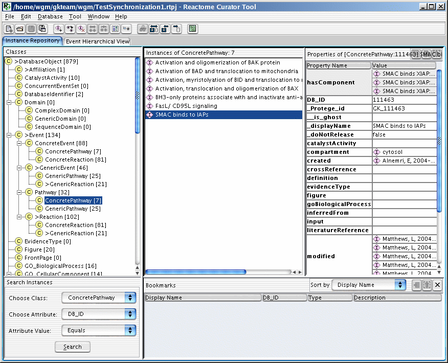
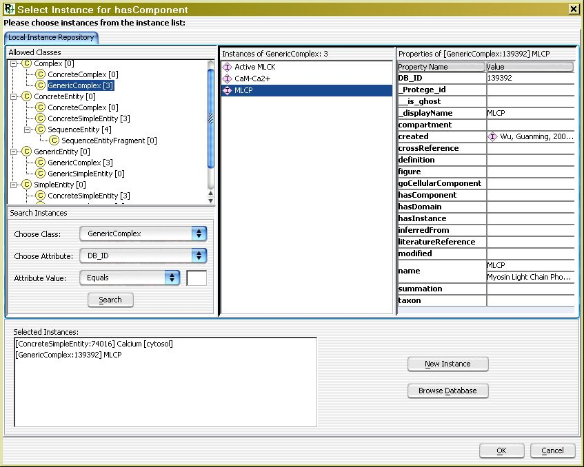
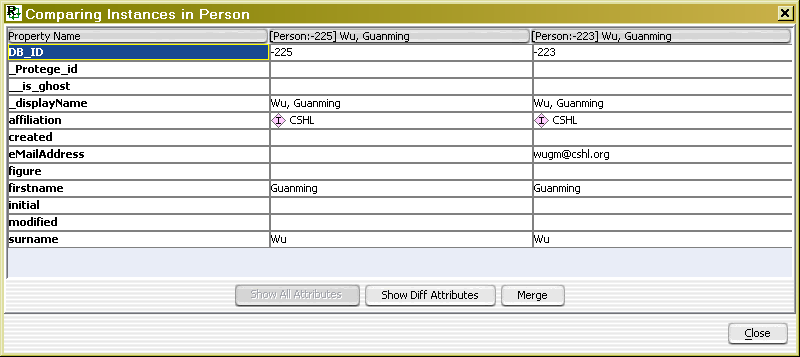
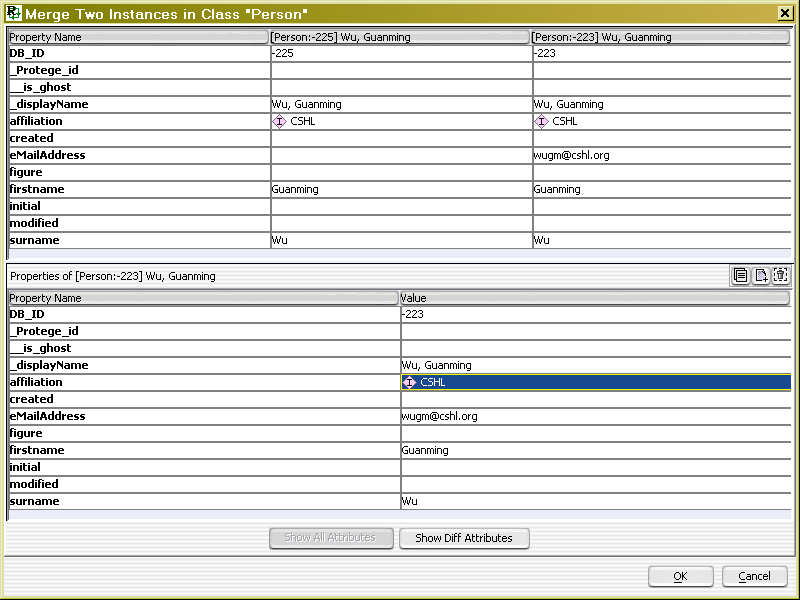
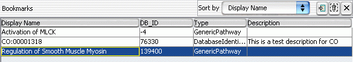
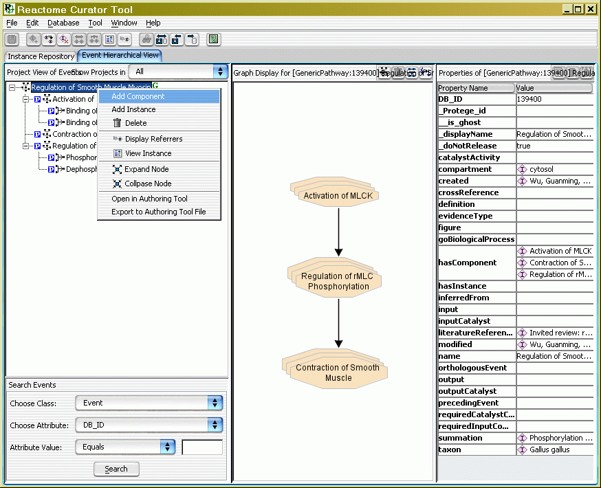
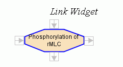
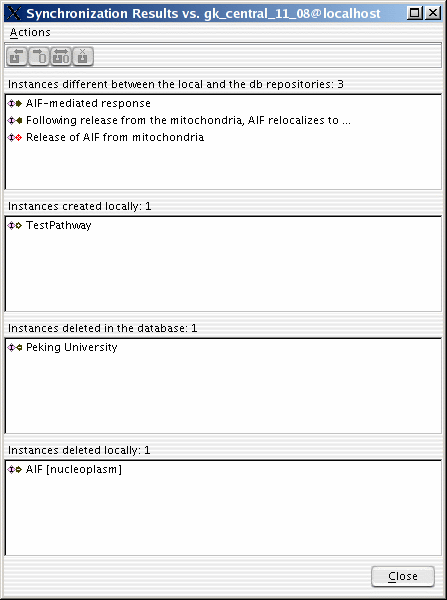
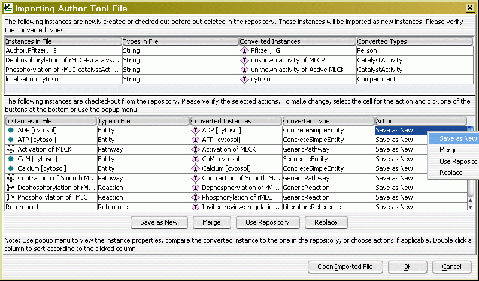
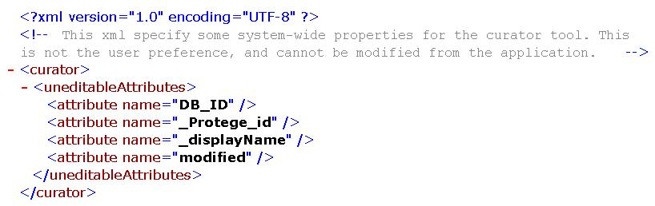

) in the
main toolbar.
) in the
main toolbar.This simple guide describes most features implemented in the curator tool (called tool afterwards). There are 8 parts in this guide:
Launch the curator tool by run the executable file
(ReactionCuratorTool.exe under Windows, ReactionCuratorTool under
Linux). After launching, create a new project by clicking menu File/New
or New Project Button () in the
main toolbar.
There are two views for the local project: instance repository view
and event hierarchical view. The instance repository view is a kind of
simplified Protege view, and organizes all instances under schema
classes. The event hierarchical view organizes all events under a tree.
The relationship of a parent node to its children in the tree is either
hasComponent or hasInstance. The user can choose the species for the
event view. The species selection will filter the top-level events only.

Editing attributes for instances is done in the attribute table. You
can use the popup menu or the toolbar buttons at the top-right corner to
do editing. For instance type attributes (an attribute whose value is an
instance or instances), a list filled with allowable instances can be
popped up for selection if the value cell is double clicked.

You can add values for a multiple-value slots but can only set a value
for a single-value slot. You can edit non-instance type slots directly
after double-clicking the attribute value cells (the cells in the value
column). But you have to go through an instance selection dialog or from
the popped-up list for instance type slots for add or set instance type
attributes. In the instance selection dialog, you can create a new
instance object by clicking "New Instance" button and then select it. Or
you can select instances from the central database directly by using
clicking "Browse Database" button. The selected db instances will be
checked out from the database to the local project fully while its
reference instances will be checked out as shell instances. A shell
instance has only DB_ID and _displayName attributes filled, and is a
stub for the instance in the database repository.

Another way to create a new instance object is by cloning. Cloning a selected instance will generate another instance with the same attributes filled except the un-editable slots (e.g. DB_ID, created, modified). After selecting one or more instances, use action "Clone Instance" in Edit menu, tool bar, popup menu or Ctrl-Shift-C to clone the selected instance(s).
Two instances belong to the same schema class can be compared by
selecting two instances and clicking Edit/Compare Two Instances menu
item. In the comparison dialog, either all attributes or different
attributes can be displayed. The two instances can also be merged into
one, and either the first or the second instance can be overwrite. The
attribute values can also be edited in case they are not good. The
merging works like this way: for a multiple-value type slot, merge
values from the two comparing instances; for a single-value type slot,
if the two instances have empty or different values, this slot will be
empty and the user should edit it manually, otherwise, it will be
assigned the value.

Two instances belong to the same schema class can also be merged
into one instance by selecting two instances and clicking the button
"Merging Two Instances" in the popup menu or in the toolbar. The merging
dialog will appear to resolve any conflicts between these two instances
(see below). The user can choose which instance should be kept by using
one of DB_IDs. Instances in the opened project referring to the merged
out one will be re-linked to the kept one. However, please be cautious
when using this feature. If a referrer for the deleted is not checked
out, the reference in it will not be relinked. So the reference will be
lost if you commit deletion for this instance. To make it work
correctly, you should check out all referrers if merging involves
database instances.

You can also switch an instance from one type (a.k.a. schema class) to another type by selecting the instance and choose "Switch Type" from the popup menu. Choose the destination schema class from the schema list dialog and click OK. All valid attribute values according to the new schema class will be kept, while invalid values will be discarded irreversibly. So please be advised that use this function cautiously.
The values in a multiple-value slot can be reordered by drag and drop. Select the value in the table and drag and drop the selected value to an expected row.
For a frequently accessed instance, you can bookmark it by selecting
and clicking "Add Bookmark" item in the popup menu in the instance list
of the schema view. The bookmark will be added to the bottom panel. A
short text description can also be added in the bookmark table. The
table can be sorted by DisplayName, DB_ID, Type or Description. You can
double click a bookmark in the table or select a bookmark and click Go
To button () to access the book marked
instance. The bookmark view can be turned on or off by using menu
Edit/Hide (Show) Bookmark View.

After editing, don't forget to save the changes by Ctrl-S, File/Save
or click save button  on the main tool bar. You can also save the opened project
as another file by menu File/Save As.
on the main tool bar. You can also save the opened project
as another file by menu File/Save As.
Please note that a newly created or modifed instance will be marked
with ">" to indicate that there are differences between the local
instance and its database counterpart. A schema class in the left schema
tree will also be marked with ">" if it contains an instance with
">" mark.
The event centric view lists all evens (Reactions and Pathways) in a
hierarchical tree based on "hasComponent" and "hasInstance" slot values.
You can create new event in this view by adding new component or new
instance through popup menu. To create a new event in the event view,
you have to have some events created in schema view first (This is a
little strange, and will be changed soon) since you have to select one
event to pop up the popup menu for events in the event view.

The editing power in the event view exists in the central graphical pane. You can add new events into this graphic pane for the displayed event instance. The added event will be added as a value in slot "hasComponent". You can also create preceding/following relationship among events contained in the displayed event. The value will be automatically assigned to the related event instances. By using link widgets (see the following image), new instances can be added and linked more quickly.

Both schema view and event view have popup menus. In the schema view, the user can delete instances directly in the database. Please note that the check out actions in the both views have different behaviors. Checking out an instance in the schema view will check out the selected instance. All instances referred by the checked out instance will be checked out as "shell" instances. Checking out an event in the event view will check out all events in the selected branch (e.g. in the above image, if you want to check out Cyclin D associated events in G1, the branch starts from Cell Cycle, Mitotic) (Layer 1), and all instances (Layer 2) referred by these events will be checked out fully. All instances referred by the instances in layer 2 will be checked out as shell instances (Layer 3). If an instance is in layer1 or layer2, it will be checked out fully event though it is in layer3.
It is required to save all changes for the local repository first before doing checking out in the event view.
"Match Instance in DB..." can find a matched instance in the database repository for the selected instance in the local repository. A matched instance has the same defining attributes as the local one. If a matched instance can be found, you can merge the local one to the database one. "Compare Instance in DB..." can compare a selected instance with the corresponded one in the database. Corresponding means the same DB_IDs. So you should not compare one instance checked from database A to an instance in database B because same DB_ID might be assigned to different instances. "Update from DB" will update a checked out instance from the database. "Check In" is used to check in newly created or modified instances to the database. It is recommended that you should use "Compare Instance in DB..." first before "Update from DB" or "Check In". After a new instance or modified instance checked into the database, the marker ">" will be removed to indicate that the local and the database copies are the same.
The menu "Synchronize with DB..." is used to check all instances in
the selected schema class in the schema view or in the whole opened
project if no class is selected. There are four possible inconsistency
categories between the two repositories: instances different between the
local and the db repositories resulting from instance modification
either locally or in the database, instances created locally, instances
deleted in the database by you or others, and instances deleted locally
by you. You can choose appropriate action for the selected instances in
different categories. Please be aware that if you do a multiple
selection from different categories, the enabled actions are applied to
all selected categories. For example, actions "Update from DB" and
"Commit to DB" can be applied to instance "AIF-mediated response" in the
first category, but only "Commit to DB" can be applied to instance
"TestPathway" in the second category. If you select both "AIF-mediated
response" and "TestPathway", only "Commit to DB" is enabled and "Update
from DB" is disabled. Double clicking an instance in the first category
will popup a comparison dialog the local and database instances, while
double clicking an instance in other categories will show the contents
of the clicked instance. To deselect a single instance, hold the control
key and click the selected instance.

There are three different cases in the first category, instances
different between the local and the db repositories: instance is
modified in the local project but not in the database, instance modified
in the database but not in the local project, and instances are modified
in both the local and database. The user can commit changes to the
database or overwrite changes by update from database for the first
case. The user cannot commit changes for an instance in the second or
third case, but can update from database for both cases.
The following is the list of icons used in the synchronization
dialog:
| Icons |
Applicable actions |
Notes |
 |
Update from DB, Commit to DB,
Show Comparison |
New changes in local instance
only |
 |
Update from DB, Show Comparison |
New changes in database instance
only |
 |
Update from DB, Show Comparison |
New changes in both local and
database instances |
 |
Commit to DB |
New local instance |
 |
Update from DB, Commit to DB | Local instance is deleted but
still exists in the database |
 |
Update from DB, Commit to DB,
Clear Record |
Database instance is deleted but
still exists in the local |
A Pathway instance (Generic or Concrete) can be opened in the author tool or exported as an author tool file. In the tree of the event centric view, select the pathway you want to export, right click it to bring up the popup menu. Select the actions "Open in Author Tool" or "Export to Author Tool File". Specify a file if be asked.
A file generated from the Reactome author tool can also be imported to the Reactome curator tool. A simplified data model is used in the author tool, some human intervention is needed to convert the instances from the author tool to the curator tool. There are two kinds of instances during importing: instances that are newly created or checked out from the curator tool but already deleted in the curator tool, instances that are checked out from the curator tool. You should make sure the converted types in the fourth column in the first category (the upper table) correct. For the instances in the second category (the lower table), you should select correct actions. There are four actions:
An author file can also be opened directly in the author tool during importing for detailed investigation. However, any changes you made in the author tool will not take effect until the file is saved and re-imported into the curator tool.

To specify un-editable slots for the instances, you need to edit an
XML file called curator.xml under resources directory. Currently, you
can only specify un-editable slots for all schema classes (i.e. schema
based). In the future, it will be possible to specify un-editable slots
for individual schema class (i.e. class based).
